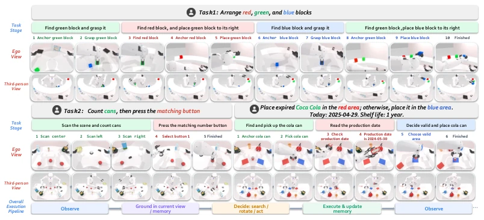
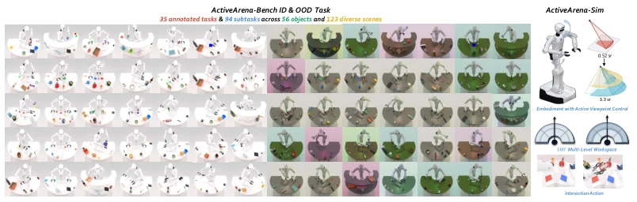
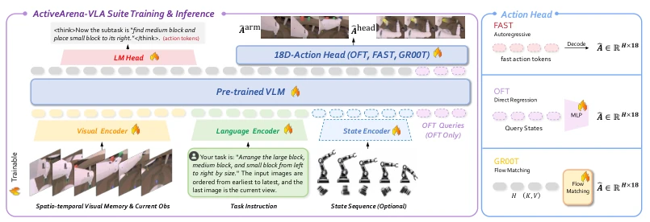
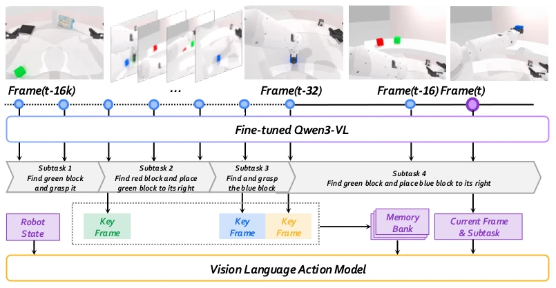
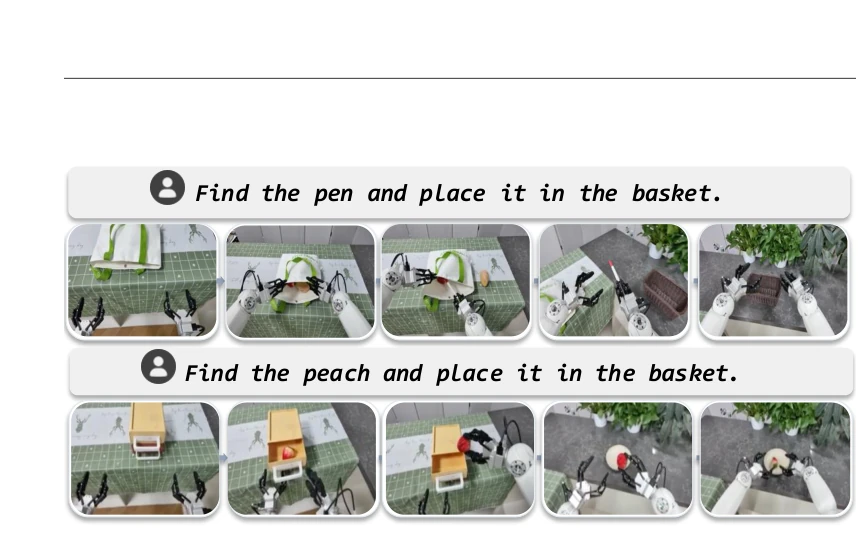
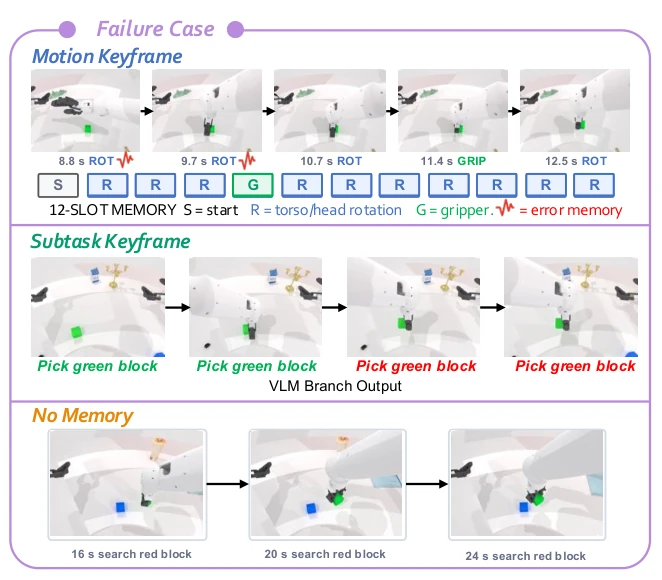
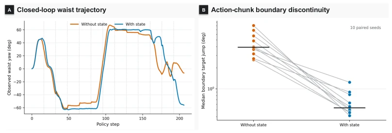
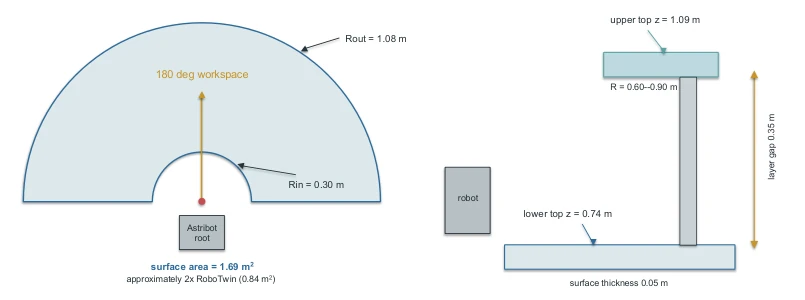
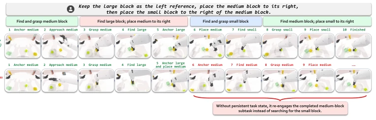
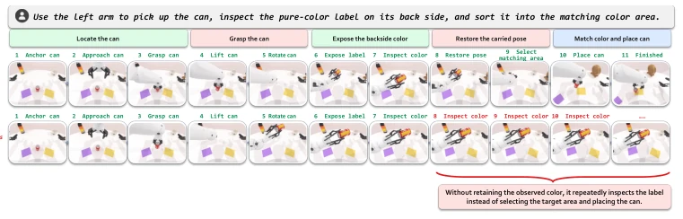

ActiveArena: Benchmarking and Understanding Active Perception in Robotic Manipulation
Yibo Li, Enshen Zhou, Rui Chen, Yanjun Ding, Mengzhen Liu, Yi Han abspdf
论文点评Review
ActiveArena 试图解决具身 AI 中“看得见”但“看不见全貌”的痛点，给机器人配了可动头颈，强制其主动搜索而非被动接收。虽然 ID 测试下表现尚可，但 OOD 泛化依然惨烈，暴露了当前 VLA 模型在长程记忆与动态环境下的脆弱性。最讽刺的是，简单的“分块”记忆采样反而比复杂的“子任务触发”更鲁棒，这给花哨的架构设计泼了盆冷水。不过，它确实填补了主动感知基准的空白，让“动脑子”和“动脖子”成了可量化的指标。尽管仿真到真实的迁移仍有距离，但其对 ID-OOD 差距的量化分析极具价值，提醒研究者别在固定视角的温室里训练“瞎子”机器人。
ActiveArena attempts to address the pain point in embodied AI of being "visible" but "unable to see the full picture", equipping robots with movable heads and necks to force active search rather than passive reception. Although performance is acceptable under ID testing, OOD generalization remains severe, exposing the fragility of current VLA models in long-term memory and dynamic environments. Ironically, simple "chunking" memory sampling is more robust than complex "subtask triggering", which pours cold water on fancy architecture designs. However, it indeed fills the gap in active perception benchmarks, making "moving the brain" and "moving the neck" quantifiable metrics. Although there is still a gap in sim-to-real transfer, its quantitative analysis of the ID-OOD gap is highly valuable, reminding researchers not to train "blind" robots in the greenhouse of fixed viewpoints.
研究动机Motivation
现有基准如 EmbodiedEval (Cheng et al., 2025) 和 LIBERO (Liu et al., 2023) 多假设固定视角或完整信息，忽略了机器人需主动调整视角以获取缺失证据的能力。Bajcsy (1988) 早已指出主动感知需维持记忆并决策下一步，但现有模拟器存在“视角固定”、“场景受限”和“交互缺失”三大鸿沟。这导致模型学会的是“看图说话”而非“探索世界”。ActiveArena 旨在通过可控视角和大空间，强制模型在部分可观测下通过多轮交互闭环完成任务，评估其信息获取与记忆维护的真实能力。它揭示了现有模型在未见背景下的策略失效问题，强调泛化需基于信息获取策略而非环境巧合。
Existing benchmarks such as EmbodiedEval (Cheng et al., 2025) and LIBERO (Liu et al., 2023) mostly assume fixed viewpoints or complete information, ignoring the robot's ability to actively adjust viewpoints to acquire missing evidence. Bajcsy (1988) pointed out early that active perception requires maintaining memory and deciding the next step, but existing simulators have three major gaps: "fixed viewpoint", "limited scene", and "lack of interaction". This leads models to learn "speaking from pictures" rather than "exploring the world". ActiveArena aims to force models to complete tasks through multi-round interaction loops under partial observability via controllable viewpoints and large spaces, evaluating their true capabilities in information acquisition and memory maintenance. It reveals the strategy failure problem of existing models in unseen backgrounds, emphasizing that generalization must be based on information acquisition strategies rather than environmental coincidences.

Figure 1: Representative ActiveArena rollouts covering 2 families (i.e., visual exploration, interactive acquisition). Each example shows the perception-action loop of evidence grounding, information ac- quisition, action execution, and memory update by coordinated head/arm actions in a large workspace. The third-person view is included solely for scene visualization.

Figure 2: Overview of ActiveArena-Bench and ActiveArena-Sim. The third-person view is included solely for scene visualization.
The core is ActiveArena-Sim, based on the Astribot S1 humanoid robot, supporting 18-dimensional action control for head, neck, and torso, constructing a 180-degree sector workspace with objects distributed at different heights. The benchmark includes 35 tasks, divided into two categories: visual search and interaction acquisition, further subdivided into 5 difficulty levels. ActiveArena-VLA is based on the StarVLA framework, providing 13 configurations to isolate influences such as memory write strategies, capacity, and proprioception. On the pipeline, strategies alternate between executing information acquisition (adjusting viewpoint/interaction) and task execution actions. The memory module supports three write strategies: Chunk, Subtask, and Motion, and introduces a Planner for sparse memory management and subtask reasoning, achieving high-level planning through fine-tuning Qwen3-VL. The data flow includes vision, language, and proprioception inputs, outputs 18-dimensional actions, and supports strict ID/OOD separation evaluation.

Figure 3: Overview of the ActiveArena-VLA framework. Spatio-temporal visual memory, language, and optional proprioceptive state sequences are encoded by a VLM and connected to OFT, FAST, or GR00T action heads for 18-D action prediction.

Figure 6: ActiveArena-Plan. The Planner identifies historical frames that span subtask transitions and adds them to the memory bank, while inferring the current subtask.
Evaluated on 35 tasks and 581.2k frame data, comparing baselines such as π0.5 and MemER. Metrics are ID/OOD success rates. Results show ActiveArena-OFT is best, with Chunk memory strategy outperforming event triggering. Proprioception significantly reduces action discontinuity. Real-world 8 tasks verify the simulation trends. The key finding is the huge ID-OOD gap, and simple stable write strategies are more critical than large capacity. The Planner scheme approaches full performance using sparse memory, proving that efficient memory management is more effective than simply stacking data. Ablation studies show that subtask supervision and proprioception input both improve OOD robustness, but action head architecture has a significant impact, with GR00T failing more due to noise.

Figure 4: Two representative rollouts from two of the eight real-world manipulation tasks.

Figure 5: Failure cases of three memory writing policies.

Figure 7: Effect of proprioceptive state conditioning on action continuity. Left: torso target trajectory, with dashed lines indicating 16-step action-chunk boundaries. Right: episode-level median target discontinuity at chunk boundaries across 10 paired seeds; gray lines connect identical seeds.
其他图片Other Figures

Figure 9: Fan-Shaped and Two-Level Workspaces.

Figure 10: Paired rollouts of the memory-aware policy MemER (top) and the memoryless policy π0.5 (bottom) on the block-arrangement task.

Figure 11: Paired rollouts of the memory-aware policy MemER (top) and the memoryless policy π0.5 (bottom) on the hidden-color sorting task.